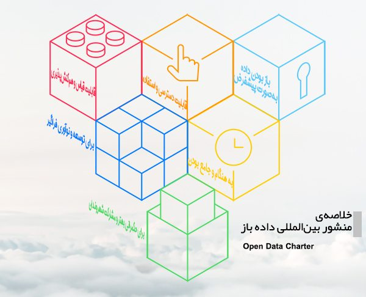
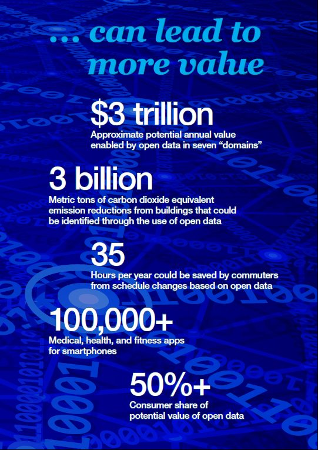
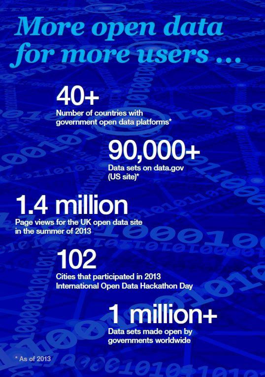
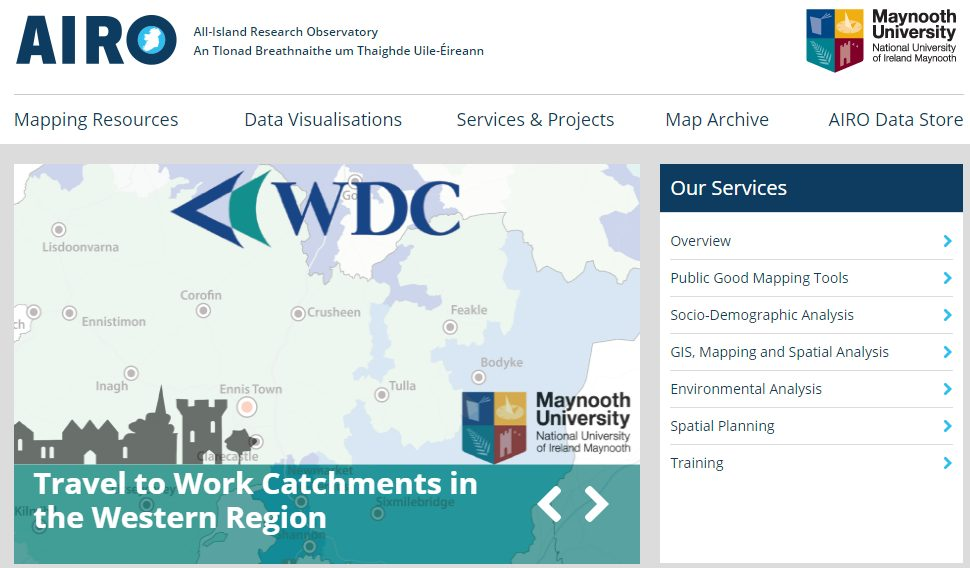
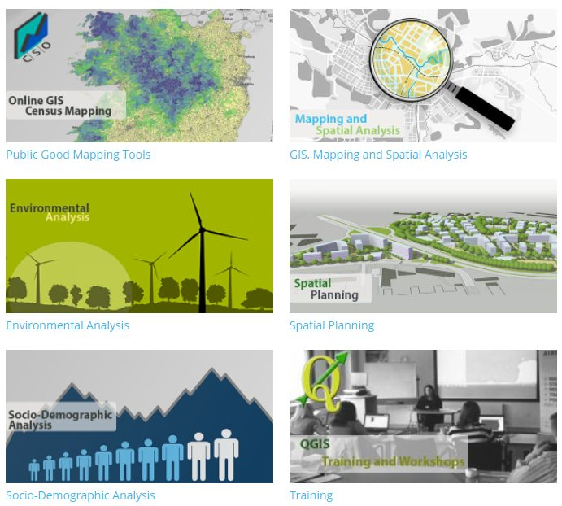
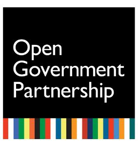
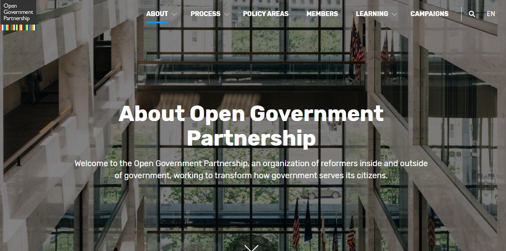
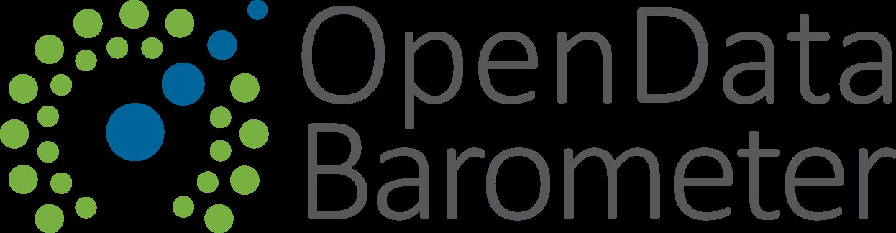
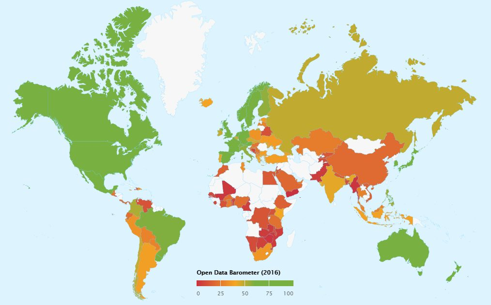
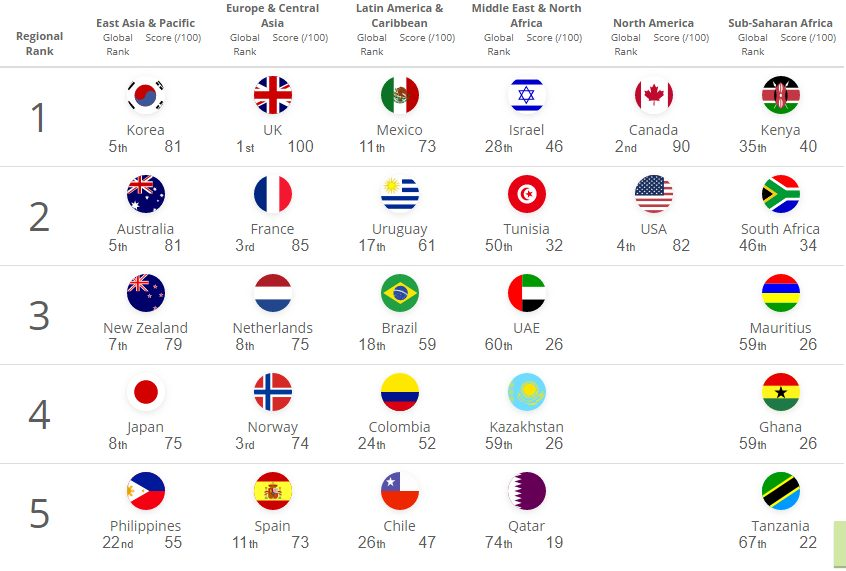

شمارهی دوم سراغ تعریفهای رقیب دادهی باز میرود، آمارهای جهانی از سال ۲۰۱۳ به اینسو را جمع میکند و منشور بینالمللی دادهی باز را معرفی میکند.
تجربهی این شماره رصدخانهی پژوهشی AIRO در ایرلند است و شاخصش وضعیتنگار دادهی باز، که جایگاه ایران را هم در آن میبینید.
تعریف دادهی باز
| ردیف | سال | نویسنده/منبع | تعریف |
|---|---|---|---|
| ۱ | ۲۰۱۶ | Open data charter | داده باز عبارت است از داده ای دیجیتالی که با مشخصات فنی و قانونی لازم برای استفاده، استفاده و توزیع مجدد آزادانه، در هر زمان و هر مکان، در دسترس قرار دارد. |
| ۲ | ۲۰۱۰ | Hogge | داده باز یعنی هر محتوا، اطلاعات یا داده ای که مردم بتوانند از آن مجانی استفاده کرده و توزیع کنند؛ بدون آنکه با محدودیتهای قانونی، فنی یا اجتماعی روبرو شوند |
| ۳ | ۲۰۱۶ | World Bank | بانک جهانی در تعریف داده باز آورده است: دادهها در صورتی باز محسوب م یشوند که هر شخص بتواند ب هصورت رایگان، بدون محدودیت و برای هر منظوری از آ نها استفاده و آ نها را مجددا توزیع کند. |
| ۴ | ۲۰۱۶ | World Bank | بنابر نظر بانک جهانی، داده باز خواهد بود اگر دو شرط زیر را با هم داشته باشد: باز بودن از لحاظ فنی: به شکل استانداردِ خوانا برای ماشین باشد بدان معنا که بتواند بازیابی شود و به طور معناداری به وسیله نرم افزار کامپیوتر پردازش شود. باز بودن از لحاظ قانونی: به طور واضح و مشخصی دارای مجوز باشد؛ به طوریکه اجازه استفاده تجاری و غیرتجاری و استفاده مجدد بدون محدودیت را داشته باشد |
| ۵ | ۲۰۱۳ | Nugroho et al | هر داده یا اطلاعاتی باز است درصورت یکه بدون محدودیت بتوان به آن دسترسی پیدا کرد، از آن استفاده و آن را باز نشرکرد. دریک حالت ایده آل، چنین دادههایی باید در قالبهای قابل خوانش به وسیله انسان (مانند PDF, DOC, HTML) و نیز ماشین (مانند CSV, RDF, XMP, JSON) عرضه شده و فاقد اطلاعات شخصی باشد |
| ۶ | ۲۰۱۰ | Open Knowledge Foundation | به طور خلاصه، میتوان گفت که داده باز آن است که امکان استفاده یا بازاستفاده (به معنی پردازش و ترکیب با دیگر داد هها برای دستیابی به داد ههای جدیدتر) آزاد و رایگان هرکس از آن برای مقاصد قانونی و مشخص، ممکن باشد. انواع مختلفی از داده باز، با استفادهها و کاربردهای خاص خود وجود دارد که عبارت اند از: فرهنگی: اطلاعات پیرامون اثرها و محصولات فرهنگی، برای نمونه عناوین و نویسندگان؛ علمی: اطلاعاتی که در نتیج. یک پژوهش علمی به دست میآید؛ مالی: اطلاعاتی همچون اطلاعات حسابهای دولتی (مخارج و درامدها) و اطلاعات بازارهای مالی (سهام، قیمتها، اوراق، …)؛ آمار: اطلاعات تولیدشده توسط دفاتر آماری، و نیز شاخصهای اصلی اقتصادی و اجتماعی؛ حمل ونقل: اطلاعاتی همچون جداول زمانی، مسیرها و…؛ محیط زیست: اطلاعاتی مرتبط با محی طزیست همچون سطح آلودگی و کیفیت رودخانهها و دریاها |
منبع: مقاله دکتر ثنایی
منشور بین المللی داده باز
منشور بین المللی دادهی باز مجموعه ای از اصول و بهترین شیوهها برای انتشار دادهی باز دولت است. این منشور به طور رسمی توسط هفده دولت (کشور، ایالت و شهر) در اجلاس جهانی مشارکت دولت باز در مکزیک در اکتبر ۲۰۱۵ تصویب شد. امضا کنندگان شامل دولتهای شیلی، گواتمالا، فرانسه، ایتالیا، مکزیک، فیلیپین، کره جنوبی، انگلستان و اروگوئه، شهرهای بوئنوس آیرس، مینیاتلان، پوئبلا، وراکروز، مونتهیودیوو، رینوسا، ایالت مورلوس و زالاپا هستند.
این منشور یکی از معتبرترین اسناد پایهی داده باز است. هر دادهای که از اصول ۶گانهی این منشور پیروی کند، باز محسوب میشود. در ادامه خلاصهای از این اصول به همراه مثال ارائه میشود.
اصل اول: باز بودن داده بهصورت پیشفرض
حکومتها و دولتها، شهرداریها و.. وظیفه دارند دادههای خود را بهصورت رایگان در اختیار عموم قرار دهند. «پیشفرض بودن» یعنی زمانی که داده تولید میشود، آن داده باز است. ضمن آنکه حریم خصوصی دادهها هم باید رعایت شود.
مثال: شما یک محقق یا شهروند کنجکاو هستید که نیاز به دادههای آموزش و پرورش شهر خود دارید.
آموزش و پروش موظف است دادههایی مثل تعداد دانشآموزان به تفکیک مقطع، جنسیت، نوع مدرسه و… را زمانی که تولید میشوند (یعنی آمارگیری تمام شده است) و حتی درخواستی نیست منتشر کند، یعنی نیازی به تایید و اجازهی ریاست، حراست و… ندارد. درعین حال نباید دادههای فوق مشخصات هویتی دانشآموزان را افشا کند.
اصل دوم: به هنگام و جامع بودن
دادهها بدون تاخیر و تغییر منتشر شده و باکیفیت و جامع باشند. ضمن آنکه باید از کاربران دادهها مشورت گرفت.
مثال: در ادامه مثال قبل، میخواهید بدانید توزیع و تعداد جمعیت دانشآموزان کلاس اولی چگونه است.
آموزش و پرورش باید دادههای دانشآموزان را در ابتدای هر فصل آموزشی (بازگشایی مدارس) یا انتهای آن منتشر کند. دادههای فوق نباید قدیمی باشند و بهنوعی بهروزرسانی دادههای قبلی هستند. یعنی وقتی دادهها کنار هم قرار میدهید، مثلا یک روند ۱۰ساله از جمعیت کلاس اولیها دارید.
در داخل دادهها هم نباید توضیح یا نموداری باشد و در هر زمان اگر نظری داشتید، باید بدون مشکلی پیشنهاد یا انتقاد خود را با مسئولین جمعآوری داده در میان بگذارید.
اصل سوم: قابلیت دسترسی و استفاده
تا وقتی دادههای باز منتشر نشوند و به دست شهروندان نرسند هیچ ارزشی ندارند. مزایای این امر تصمیمگیری بهتر و تعامل بین مسئولین و شهروندان است. این دسترسی باید در یک پورتال واحد انجام شود تا تمام دادهها در یک جا قرار بگیرند و اصطلاحا جزیره جزیره نباشند.
از همه مهمتر، دادهها باید در فرمتهای مختلف (CSV, XLS, TXT) منتشر شده تا کاربران مشکلی برای ویرایش دادهها نداشته باشند. ضمنا، استفاده از دادهها نیازی به کسب اجازه، مجوز، احراز هویت کاربر و.. ندارد.
مثال: برای تحقیق خود، نیاز به آمار جمعیت، ثبت ازدواج و طلاق و تعداد دانشآموزان ابتدایی دارید.
آیا برای به دست آوردن این دادهها باید به آموزش و پرورش و سازمان ثبت احوال شهر خود مراجعه کنید؟ از ریاست و بازرسی کسب اجازه کنید؟ یا سایتهای هرکدام را جداگانه زیر و رو کنید؟ خیر!
اصل انتشار داده باز این است که هر دو سازمان، دادههای خود را در یک پورتال واحد مثلا Data.gov.ir به تفکیک موضوع و.. ثبت کنند و شما هم نیازی ندارید هویت خود را فاش نمایید. دادههای موجود در پورتال میتواند PDF باشد اما اولویت با فایلهای متنی و صفحه گسترده (اکسل و..) است و اگر دادهای PDF بود، فایل متنی یا اکسل آن هم باید وجود داشته باشد. اگر برای دسترسی به داده یا فرمت آن مشکلی پیش آمد، حق اعتراض دارید.(اصل دوم)
اصل چهارم: قابلیت قیاس و همکنشپذیری
دادهها نباید کلی بوده و باید به قسمتهای کوچکتر مثل تقسیمات جغرافیایی، زمانی و.. تقسیم شوند. بهطور معمول دادهها توضیحاتی دارند که باید توضیح داده شوند. دادهها باید در فرمتهایی مثل CSV منتشر شوند که قابلیت ماشینخوان بودن را داشته باشند.
مثال: میخواهید دادههای آموزش و پرورش را از پورتال دریافت کنید.
دادهها باید به تفکیک سال ارائه شده باشند، مثلا از سال ۸۰ تا ۹۰ غلط است. مختصات مکانی مدارس هم باید در داخل دادهها موجود باشند، مثلا وقتی میخواهید در گوگل ارث مکان مدارس را ببینید، تنها کافی است طول و عرض جغرافیایی آن را وارد نمایید. اما چرا نباید در گوگل ارث با اسم، یک مدرسه را پیدا کرد؟ چون مدارس زیادی با نامهای مشابه وجود دارند.
شاید دادهای نیاز به توضیح داشته باشد، این توضیح نباید در داخل فایل باشد، بلکه در صفحهی دریافت فایل جداگانه نوشته شود. چرا؟ به این دلیل که وقتی قرار است دادهها ماشینخوان شوند و API داده شود، توضیحات فوق میتواند ایجاد خطا کند.
اصل پنجم: برای حکمرانی بهتر و مشارکت شهروندان
بهترین راه برای جلوگیری از فساد در دولتها و حکومتها نظارت شهروندان است. پیشنیاز این کار انتشار دادههاست که باعث شفافیت میشود. ضمن آنکه انتشار دادهها باعث تعامل شهروندان و مسئولین شده که میتواند بهبود عملکرد دولتها را در پی داشته باشد، چرا که شهروندان مشکلات را مشاهده کرده و میتوانند راهحل یا ایدهی بهتری ارائه دهند (خرد و تصمیمات جمعی).
مثال: معمولا مدارس دولتی به دلایل گوناگون از اولیا شهریه میگیرند با اینکه اینکار غیرقانونی است.
وقتی مدارس موظف شوند دادههای خود را منتشر کنند، دادههای مخارج و تعمیرات مدرسه را هم باید ارائه دهند. با انتشار دادههای مالی میتوان فهمید آیا فسادی در مدرسه وجود دارد یا خیر و چرا بودجههای دولتی کفاف خرج مدارس را نمیدهد.
یا مثلا آموزش و پرورش میخواهد مدرسهی جدیدی را بسازد، آیا این کار ضروری است؟ موقعیت مکانی آن مناسب است؟ و موارد دیگر که وقتی شهروندان اجازه بیان نظرات خود را داشته باشند و بتوانند در فرآیند تصمیمسازی مشارکت کنند، میتوان از خرجهای بیهوده و اتلاف وقت جلوگیری کرده و تصمیمات بهتری اتحاذ کرد.
اصل ششم: برای توسعه و نوآوری فراگیر
زمانی که دادهها منتشر میشوند شهروندان میتوانند آنها را مشاهده و برسی کنند. اگر مشکلی بود برای آن راهحل بدهند، راهحلهای موجود را نقد کرده و برای چالشهای فعلی در هر سطحی بتوانند ایدهای مطرح کنند. وقتی دادهها در دسترس همه باشد، کارآفرینان میتوانند از دادهها ارزش افزوده ایجاد کنند.
روزنامهنگاری داده و تحقیقی میتواند با بررسی دادهها فسادها را کشف و افشا کند. مصورسازی دادهها آنها را معنیدار کرده و الگوهای پنهان را آشکار میکند. میتوان دادهها را ترکیب کرده و به فهم جدیدی رسید. و خیلی کارها و اقدامات دیگر که پیشنیاز آنها انتشار دادهها به صورت باز است.

مجموعه آمارهایی از داده باز


داده باز بیشتر برای کاربران بیشتر …..
۴۰+ کشور با پلتفرمهای دادهی باز حکومتی (در سال ۲۰۱۳ - As of ۲۰۱۳)
+۹۰٬۰۰۰ دیتاست در data.gov (سایت آمریکا)
۱.۴ میلیون مشاهده صفحه برای سایت دادهباز انگلستان در تابستان ۲۰۱۳
۱۰۲ شهر که بصورت بین المللی در رویدادهای (هکاتونهای) دادهی باز مشارکت داشتند
۱ میلیون+ دیتاستهای ساخته شده توسط دولتها در سراسر جهان
میتواند به ارزش بیشتری منجر شود…
۳$ تریلیون ارزش تقریبی سالانه بالقوه
حاصل از دادهی باز در هفت حوزه (آموزش، حملونقل، محصولات مصرفی، برق، گاز و نفت، سلامت و امور مالی)
۳ بیلیون تن دی اکسید کربن؛ کاهش انتشار از ساختمانهایی که میتوان با استفاده از دادهی باز شناسایی شوند
۳۵ ساعت در سال؛ ذخیره زمان از تغییرات برنامه زمانی مسافران با استفاده از داده باز
+ ۱۰۰٬۰۰۰؛ برنامههای پزشکی، بهداشتی و تناسب اندام برای تلفنهای هوشمند
+۵۰% سهم مصرف کننده از ارزش بالقوه دادهی باز
منبع: گزارش سایت مک کنزی در سال ۲۰۱۳ (Open data: Unlocking innovation and performance with liquid information)
رصدخانه تحقیقاتی All-Island
AIRO مخفف رصدخانه تحقیقاتی All-Island است که تحقیقات نقشه برداری دانشگاهی و کاربردی را انجام میدهد و مجموعه دادههای مکانی و ابزارهای تخصصی را برای کمک به تجزیه و تحلیل آنها تولید میکند. AIRO مجموعه ای از نقشه برداری عمومی و ابزارهای تصویرسازی داده رایگان را با هدف بهبود برنامه ریزی آگاهانه مبتنی بر شواهد ارائه میدهد. همچنین تحقیقاتی کاربردی و پروژههای مشاورهای در زمینه تحلیلهای اجتماعی، جمعیتشناختی و اقتصادی، برنامه ریزی مکانی و تحلیل محیط زیست انجام میدهد. AIRO همچنین یک سری کارگاه آموزشی در زمینه سیستمهای اطلاعات جغرافیایی (GIS) و برنامه ریزی مبتنی برشواهد ارائه میدهد. رصدخانه منابع نقشهبرداری را به عنوان ابزار اطلاع رسانی خوب به مردم و با هدف بهبود برنامه ریزی آگاهانه مدارک در ایرلند ارائه میدهد.

بخشهای مختلفی برای ارائه پشتیبانی طراحی شده اند و به درک پویایی نواحی محلی، شهرستانها، مناطق و نواحی مرزی ایرلند کمک میکند.
نقشه برداری سرشماری بخش مهمی از این کار را تشکیل میدهد. اکنون ابزارهای نقشه برداری AIRO بطور منظم برای حمایت از کارهای کلیدی در توسعه سیاستها مانند برنامههای توسعه شهرستانها (CDPs) و برنامههای اقتصادی و اجتماعی محلی (LECPs) توسط مقامات محلی در سراسر ایرلند استفاده میشود. همکاریهای اخیر بین AIRO و آژانسهای آماری در جمهوری ایرلند و ایرلند شمالی تعدادی از ابزارهای برنامه ریزی آگاهانه مدار مرزی نیز ایجاد کرده است.

اقدام پیشنهادی دوم: اتخاذ یک برنامه اقدام یا برنامه اجرایی بر اساس استراتژی دادهی باز و استراتژی دیجیتال
برای هر کشوری تدوین ۲ نوع استراتژی دادهی باز و استراتژی دیجیتال پیشنهاد میگردد. استراتژی دادهی باز اهداف اصلی دستیابی به دادهی باز را تعیین میکند. استراتژی دیجیتال اهداف اصلی را برای توسعه دولت الکترونیکی در کشور از جمله زیرساختهای فناوری اطلاعات و ارتباطات و استفاده از فناوری در سطح کشور را برجسته میکند.
این اهداف باید با درنظرگرفتن واقعیتهای کشور بهویژه ساختار سازمانی (انتساب مسئولیتها)، بودجه و منابع واولویتها عملی شوند. بهطورمعمول، برنامه اقدام شامل یک سری اقدامات است که به موسسات یا گروههای کاری خاص نسبت داده میشود واز آنها تحت عنوان برنامهها یا پروژهها یاد میشود.
علاوهبراین، تعهد بینالمللی برای دستیابی به برنامه اقدام ملی یکی دیگر از راههایی است که میتواند برای هدایت برنامه اقدام در سطح ملی و تعامل با ذینفعان در نظر گرفت و انجام داد. به طور مثال چنین تعهدی را میتوان با مشارکت در طرحهای ابتکاری مثل سازمان «همکاری دولت باز» به وجود آورد.
«مشارکت دولت باز» یک جنبش جهانی است که در راستای ترویج فعالیتهای چندجانبه بینالمللی و ایجاد تعهدات قوی در نهادهای دولتی به منظور، افزایش مشارکت مردمی، مبارزه با فساد و بکارگیری فناوریهای جدید برای ایجاد دولتهایی بازتر، اثربخشتر و پاسخگوتر فعالیت میکند. OGP تلاش میکند تا تعهدات مشخصی را از کشورهای داوطلب عضو اخذ نموده و از این طریق حرکتی را در سطح دولت ایجاد نموده، نوآوری را در سطح ملی ترویج نماید. این سازمان در سپتامبر ۲۰۱۱ و به منظور فراهمسازی بستری بینالمللی برای مصلحان کشورهای مختلف که در راستای ارتقاء دولتهای خود فعالیت میکنند، ایجاد شده است. از آن زمان، اعضای OGP از ۸ کشور مؤسس (برزیل، اندونزی، مکزیک، نروژ، فیلیپین، آفریقای جنوبی، انگلستان، ایالات متحده) به ۶۶ (۲۰۱۵) کشور رسیده است. در همه این کشورها، دولتها و نیز مردم در راستای تحول و ایجاد اصلاحاتی مهم در دولتهای خود در حال تلاش میباشند.
اجرای برنامه اقدام باید به طور مکرر مورد نظارت قرار گیرد. تا این حد، یک کارگروه ملی و یا یک نهاد میتواند نقش نظارت بر اجرای اقدامات مختلف را نسبت به اهداف و بودجه خود به عهده بگیرد. توصیه میشود اجرای پروژهها به صورت ماهانه نظارت و ارزیابی برنامهها به صورت دوساله انجام شود. خود برنامه اقدام میتواند هر ساله با تلفیق نتایج ماهانه و دوسالانه ارزیابی شود.


وضعیت نگار دادهی باز (Open Data Barometer)

یک مقیاس جهانی در مورد نحوه انتشار و استفاده حکومتها از داده باز برای پاسخگویی، نوآوری و تأثیرات اجتماعی است. بارومتر داده باز توسط بنیاد جهانی وب تاسیس و با حمایت شبکه Omidyar و باهدف شناسایی و ترویج اقدامات ابتکارانه دولت باز در سراسر جهان فعالیت دارد.
آخرین نسخه منتشر شده از این شاخص، تحت عنوان Leaders است. در حالی که نسخههای قبلی بیش از ۱۰۰ دولت را اندازه گیری میکردند، بارومتر داده باز در نسخه Leaderers Edition بر دولتهایی که منشور داده باز را پذیرفته یا کسانی که به عنوان اعضای G20 به اصول داده باز ضد فساد اداری متعهد هستند و بر اصول منشور متکی هستند؛ تمرکز دارد. این ۳۰ دولت باید - با تعهدات مشخص - رهبرهای این فضا باشند. بارومتر این رهبری را با بررسی پیشرفت آنها سنجش میکند و آن رابا نتایج جهانی نسخههای قبلی مقایسه میکند. این گزارش خلاصه برخی ازبرجستهترین یافتهها است.
این شاخص روندهای جهانی را تجزیه و تحلیل میکند و با استفاده از یک متدولوژی عمیق که شامل دادههای متنی (زمینهای)، ارزیابیهای فنی و شاخصهای ثانویه است؛ دادههای مقایسه ای را در مورد دولتها و مناطق ارائه میدهد.
وضعیت کشورهای جهان از نگاه این شاخص

این شاخص در سالهای ۲۰۱۳، ۲۰۱۴، ۲۰۱۵، ۲۰۱۷ و ۲۰۱۸(نسخه رهبران) نتایج بررسیهای خود را منتشر نموده است. خلاصه ای از نتایج آخرین نسخه را مشاهده مینمایید:
| رتبه | کشور | نمره کل | بعد آمادگی | بعد اجرا | بعد تاثیر |
|---|---|---|---|---|---|
| ۱ | کانادا | ۷۶ | ۸۶ | ۸۷ | ۵۵ |
| ۱ | انگلیس | ۷۶ | ۸۳ | ۸۹ | ۵۷ |
| ۳ | استرالیا | ۷۵ | ۷۹ | ۸۴ | ۶۲ |
| ۴ | فرانسه | ۷۲ | ۸۴ | ۷۷ | ۵۵ |
| ۴ | کره جنوبی | ۷۲ | ۸۲ | ۶۷ | ۶۷ |
| ۶ | مکزیک | ۶۹ | ۷۹ | ۶۷ | ۶۲ |
| ۷ | ژاپن | ۶۸ | ۷۸ | ۶۸ | ۵۸ |
| ۷ | نیوزلند | ۶۸ | ۷۹ | ۷۲ | ۵۲ |
| ۹ | آمریکا | ۶۴ | ۷۹ | ۷۶ | ۳۷ |
| ۱۰ | آلمان | ۵۸ | ۷۶ | ۷۲ | ۲۷ |
| ۱۱ | اروگوئه | ۵۶ | ۷۱ | ۷۰ | ۲۸ |
| ۱۲ | کلمبیا | ۵۲ | ۶۹ | ۶۰ | ۲۸ |
| ۱۳ | روسیه | ۵۱ | ۶۲ | ۵۹ | ۳۲ |
| ۱۴ | برزیل | ۵۰ | ۶۳ | ۵۶ | ۳۰ |
| ۱۴ | ایتالیا | ۵۰ | ۶۱ | ۶۱ | ۲۷ |
| ۱۶ | هند | ۴۸ | ۶۴ | ۴۹ | ۳۲ |
| ۱۷ | آرژانتین | ۴۷ | ۶۶ | ۵۶ | ۲۰ |
| ۱۷ | اوکراین | ۴۷ | ۶۰ | ۵۲ | ۲۸ |
| ۱۹ | فیلیپین | ۴۲ | ۵۴ | ۴۲ | ۳۰ |
| ۲۰ | شیلی | ۴۰ | ۵۴ | ۵۵ | ۱۲ |
| ۲۱ | اندونزی | ۳۷ | ۴۹ | ۴۵ | ۱۷ |
| ۲۲ | آفریقای جنوبی | ۳۶ | ۵۰ | ۳۷ | ۲۲ |
| ۲۳ | پاراگوئه | ۳۴ | ۴۱ | ۴۵ | ۱۵ |
| ۲۴ | چین | ۳۱ | ۴۴ | ۳۸ | ۱۰ |
| ۲۴ | کاستاریکا | ۳۱ | ۴۸ | ۴۳ | ۳ |
| ۲۴ | ترکیه | ۳۱ | ۳۳ | ۵۳ | ۷ |
| ۲۷ | پاناما | ۳۰ | ۴۷ | ۴۲ | ۰ |
| ۲۸ | گواتمالا | ۲۶ | ۳۶ | ۳۷ | ۵ |
| ۲۹ | عربستان سعودی | ۲۵ | ۴۰ | ۳۲ | ۳ |
| ۳۰ | سیرالئون | ۲۲ | ۳۳ | ۲۳ | ۱۰ |
منبع این جدول و جدول بعد
در جدول زیر ارزیابی مجموعه دادههای دولتی را بر اساس معیارهای کیفی دادهی باز، نشان میدهد. همچنین امکان مقایسه میانگین کلی هر معیار در نسخه رهبران (۳۰ کشور) با نسخه چهارم (۱۱۵ کشور) ارائه شده است. سلولهای سبز و قرمز به ترتیب بالاترین و کمترین مقدار در هرمعیار را نشان میدهد.
| دیتاست | بازبودن | ماشینخوان | یکجا | رایگان | مجوز باز | به روز | پایدار | قابل کشف |
|---|---|---|---|---|---|---|---|---|
| نقشهها | ۲۰% | ۸۵% | ۴۲% | ۸۱% | ۳۹% | ۴۶% | ۴۶% | ۸۵% |
| زمین | ۷% | ۶۷% | ۳۳% | ۷۳% | ۳۳% | ۷۳% | ۸۰% | ۸۰% |
| آمارها | ۲۷% | ۹۰% | ۴۷% | ۹۷% | ۵۰% | ۹۳% | ۸۷% | ۹۳% |
| بودجه | ۳۰% | ۷۹% | ۴۵% | ۱۰۰% | ۵۹% | ۱۰۰% | ۱۰۰% | ۷۹% |
| مخارج | ۱۳% | ۸۹% | ۶۷% | ۱۰۰% | ۵۶% | ۷۸% | ۷۸% | ۵۶% |
| شرکتها | ۱۳% | ۶۰% | ۳۵% | ۷۰% | ۳۵% | ۵۵% | ۵۵% | ۶۰% |
| قانونگذاری | ۱۳% | ۳۷% | ۲۰% | ۱۰۰% | ۳۰% | ۱۰۰% | ۱۰۰% | ۹۳% |
| حمل و نقل | ۳۰% | ۶۴% | ۳۶% | ۱۰۰% | ۵۶% | ۶۸% | ۷۶% | ۸۰% |
| تجارت | ۲۳% | ۹۰% | ۳۷% | ۱۰۰% | ۴۳% | ۹۰% | ۹۳% | ۶۷% |
| سلامت | ۱۷% | ۸۰% | ۲۷% | ۱۰۰% | ۴۳% | ۶۳% | ۶۰% | ۵۳% |
| آموزش | ۱۳% | ۸۲% | ۲۶% | ۱۰۰% | ۴۴% | ۶۷% | ۵۹% | ۵۹% |
| جرائم | ۱۷% | ۷۱% | ۲۹% | ۱۰۰% | ۳۹% | ۷۹% | ۶۴% | ۳۹% |
| محیط زیست | ۲۰% | ۸۵% | ۳۳% | ۹۶% | ۵۲% | ۴۱% | ۳۳% | ۴۴% |
| انتخابات | ۱۷% | ۸۲% | ۳۲% | ۱۰۰% | ۲۹% | ۹۶% | ۸۲% | ۸۹% |
| قراردادها | ۲۷% | ۶۱% | ۳۶% | ۱۰۰% | ۴۳% | ۹۶% | ۸۲% | ۷۵% |
| میانگین در نسخه رهبران (۳۰ کشور) | ۱۹% | ۷۵% | ۳۵% | ۹۶% | ۴۳% | ۷۷% | ۷۴% | ۷۱% |
| میانگین جهانی در نسخه چهارم (۱۱۵ کشور) | ۷% | ۵۳% | ۲۴% | ۹۰% | ۲۶% | ۷۴% | ۶۶% | ۷۳% |
آخرین نسخه جامع این شاخص که اکثر کشورها مورد بررسی قرار گرفتهاند در سال ۲۰۱۷ منتشر شده است. در این نسخه ۱۱۵ کشورجهان در قالب ۳ بعد فوق الذکر مورد بررسی قرار گرفتند. بهترین کشورها از نگاه این شاخص در قالب جدول زیر آمده است:
| رتبه | امتیاز | کشور | آمادگی | اجرا | تأثیر |
|---|---|---|---|---|---|
| ۱ | ۱۰۰ | انگلستان | ۹۹ | ۱۰۰ | ۹۴ |
| ۲ | ۹۰ | کانادا | ۹۶ | ۸۷ | ۸۲ |
| ۳ | ۸۵ | فرانسه | ۱۰۰ | ۷۱ | ۸۸ |
| ۴ | ۸۲ | ایالات متحده آمریکا | ۹۶ | ۷۱ | ۸۰ |
| ۵ | ۸۱ | کره | ۹۵ | ۵۹ | ۱۰۰ |
| ۵ | ۸۱ | استرالیا | ۸۵ | ۷۸ | ۷۸ |
| ۷ | ۷۹ | نیوزلند | ۹۲ | ۵۸ | ۹۹ |
| ۸ | ۷۵ | ژاپن | ۸۴ | ۶۰ | ۸۹ |
| ۸ | ۷۵ | هلند | ۹۴ | ۶۴ | ۶۸ |
| ۱۰ | ۷۴ | نروژ | ۷۷ | ۷۱ | ۷۳ |
نسخه چهارم (سال ۲۰۱۷) نسبت به دوره قبل ۲۵ درصد افزایش را نشان میدهد. رهبران هر منطقه در این نسخه کانادا، اسرائیل، کنیا، کره، مکزیک و انگلیس هستند. به طور کلی، یافتهها نشان میدهد که کشورها به طور مداوم در حال بهبود هستند. شکل زیر کشورهای پیشتاز در مناطق مختلف را نشان میدهد:

وضعیت ایران
ایران از ابتدا در وضعیت نگار نبوده و نیست. این شاخص برای سنجش وضعیت باز بودن دادههای کشورهای مختلف نیاز به سطحی از ارتباط با دولت آن کشور دارد. ایران ارتباطی با نهاد متولی این شاخص (Web Foundation) ندارد. به همین خاطر در ارزیابیها نامی از ایران برده نشده است.
ابعادو مؤلفهها
وضعیت نگار ارزیابی خود را در قابل سه بعد کلی آمادگی برای نوآوریهای دادههای باز؛ اجرای برنامههای دادهی باز و تأثیر دادهی باز بر تجارت، سیاست و جامعه استوار کرده است. این ابعاد در قالب چهارنوع داده مورد سنجش قرار گرفته اند:
- ارزیابی خود دولت از طریق یک نسخه سادهشده از ارزیابی.
- داوری همتا (بازبینی ارزیابیهای متخصصان و دولت)
- بررسی متخصصان که به بررسی طیف وسیعی از سؤالات در مورد ابعاد فوق الذکر و برای ۱۵ نوع گروه از دادهها درهر کشور میپردازد.
- دادههای ثانویهای که شامل مجمع جهانی اقتصاد، بانک جهانی، بررسیهای سازمان ملل و… میشود.
در جدول زیر ابعاد، مؤلفهها و تعداد سؤالات هریک به تفکیک آمده است:
| ابعاد | آمادگی (%۳۵) | اجرا (%۳۵) | تأثیرات (%۳۰) |
|---|---|---|---|
| مؤلفهها | اقدام دولت سیاستهای دولت شهروند و نهادهای اجتماعی کارآفرینان و کسبوکار | پاسخگویی نوآوری سیاست اجتماعی | سیاسی اجتماعی اقتصادی |
| گویهها | ۹ سؤال | ۱۰ سؤال | ۷ سؤال |
همانطور گفته شده یکی از بخشهای رتبهبندی شده اجرا میباشد. برخی از معیارهای ارزیابی این بخش به شرح ذیل میباشد. تمامی معیارها (سؤالات) با توجه به یک دستورالعمل و منطق پاسخدهی و همچنین وزن متفاوت ارزیابی میشود.
| بعد | مؤلفه |
|---|---|
| اجرا | آیا داده وجود دارد؟ |
| آیا به صورت آنلاین از طریق دولت در دسترس است؟ | |
| آیا مجموعه دادهها در قالبهای ماشین خوان ارائه شدهاند؟ | |
| آیا دادههای ماشینخوان بصورت یکجا موجود هستند؟ | |
| آیا مجموعه دادهها بصورت رایگان در دسترس هستند؟ | |
| آیا دادهها مجوز باز دارند؟ | |
| آیا مجموعه دادهها به روز هستند؟ | |
| آیا انتشار مجموعه داده پایدار هستند؟ | |
| آیایافتن اطلاعات درمورداین مجموعه داده آسان بود؟ | |
| آیا لینک (URI) دادهها برای پیوند به عناصر اصلی دادهها ارائه شده است؟ |
گزارش پژوهشی داخلی